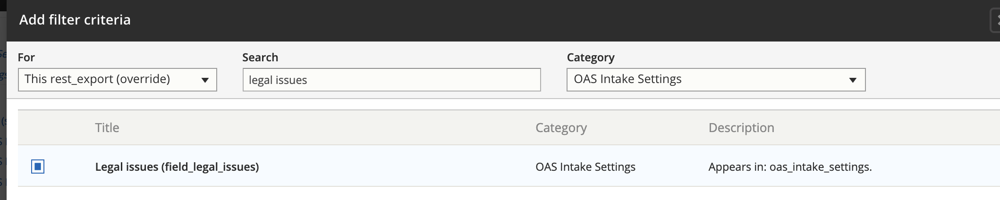

Webforms for Guided Navigation¶
Webforms are used to help us process outcomes from our Guided Navigation triage rules hosted on LegalServer. In Guided Navigation, we triage users to a case category outcome based on a standard set of questions. We use the webform to capture what case categories a specific service takes. Each field in the webform corrosponds to an outcome field in Guided Navigation and uses the same field key.
Note
For example, Guided Navigation for TANF has an outcome field ilao_tanf_cut_outcome_202 that includes all the possible outcomes for a user who has had TANF benefits cut. Each combination has a number associated with it. In the webform, there is a field labeled “What TANF reduction or ending cases do you take?” with options whose keys align with the Guided Navigation.
Each participating service will have a webform submission with their case acceptance criteria selected. Only the most recent webform submission for a specific service will be used in evaluation.
We can then check to see if the user’s outcome is in a service’s webform results to find matching organizations, in combination with the associated service and intake settings.
Creating the Webform¶
Creating the REST Export¶
To make the webform submission data available in other systems, we need a REST export for each individual webform. This is accomplished by creating a REST export in the case acceptance view.
The REST export connects webform submission data with the service associated with the webform and with the intake settings entity associated with the service.
Path settings¶
Each REST export must have a path. That path should be set to /rest/[category]-cases
Format¶
Each rest export must:
have a format of serializer set to show fields
in the Show field settings, each field in the results should have an alias that matches the actual key name

Warning
It is absolutely CRITICAL that when creating the rest export, the “For” dropdown is always ALWAYS set to This rest_export override to avoid messing up other exports.

Fields¶
The fields should include data associated with the specific webform:
the legal issue field
the service from the webform
each outcome field in the webform. These should be set to show all multiple values with a format of raw value.
In addition, we need to relate the service and the service’s matching intake settings. To do this, first, we need to create the relationships.
For the service, it is the Referenced Content in the category of the [name of webform] submission data with a description of Value of the field Service in webform
For the intake setting, it is the title of “OAS Intake settings using field_service_single” of category content with a description of “Relate each OAS Intake Settings with a field_service_single set to the content item. It should then show a relationship dropdown set to “Content”
Once the relationships are set, the fields should be updated to include:
the uuid for the service. This is found under title = UUID, category = Content. This must have a relationship of Content
the id for the intake settings. This is found under title = id, category = OAS intake settings. This should have a relationship of field_service_single in the drop down.
the uuid for the intake settings. This is found under title = UUID, category = OAS intake settings. This should have a relationship of field_service_single in the drop down.
the name of the intake settings. This is found under title = name, category = OAS intake settings. This should have a relationship of field_service_single in the drop down.
Filter Criteria¶
There should be a filter criteria to limit the intake settings to the legal issue that matches the webform. For example, the SNAP webform is limited to intake settings with a legal issue of “Food stamps” (which automatically includes child terms). The Views filter requires that you match on the term NAME rather than the ID.
Sort Criteria¶
To ensure we are only counting the most recent webform for a service, the sort criteria should be set to use Webform submission : Submission id ordered descending. This can be found under category webform submission, title submission id.
Note
Webform submission is a category independent of each of the specific webforms’ submission categories.
Pager¶
Pager should be set to show all items
Sample REST Export¶
Admin interface for view ————========——
Sample Data Export¶
Note
Data exports are only accessible with an access token from our API.
[
{
"legal_issue": "515831",
"service": "29531",
"unemploy_apply_outcome_182": "1, 2, 3, 4, 5, 6, 7, 8, 9, 10, 11, 12",
"ilao_unemploy_program_rules_outcome_186": "1, 2, 3, 4, 5, 6, 7, 8",
"ilao_unemploy_deny_outcome_183": "1, 2, 3, 4, 5, 6, 7, 8, 9, 10, 11, 12, 13, 14, 15, 16",
"ilao_unemploy_overpayment_outcome_184": "1, 2, 3, 4, 5, 6, 7, 8",
"ilao_unemploy_cut_outcome_187": "1, 2, 3, 4, 5, 6",
"service_id": "29531",
"service_uuid": "7764b08b-9d7a-4729-860b-03ae8736b4ee",
"intake_id": "1496",
"intake_uuid": "8146226a-a2dc-4ae7-ba57-4b6a5940f403"
},
{
"legal_issue": "515831",
"service": "28806",
"unemploy_apply_outcome_182": "1, 2, 3, 4, 5, 6, 7, 8, 9, 10, 11, 12",
"ilao_unemploy_program_rules_outcome_186": "1, 2, 3, 4, 5, 6, 7, 8",
"ilao_unemploy_deny_outcome_183": "1, 2, 3, 4, 5, 6, 7, 8, 9, 10, 11, 12, 13, 14, 15, 16",
"ilao_unemploy_overpayment_outcome_184": "1, 2, 3, 4, 5, 6, 7, 8",
"ilao_unemploy_cut_outcome_187": "1, 2, 3, 4, 5, 6",
"service_id": "28806",
"service_uuid": "e268cf91-5994-4cca-a751-0cabd76bb3d8",
"intake_id": "1451",
"intake_uuid": "dad7f107-94c6-42b9-9033-30bbe37a6fb6"
},
{
"legal_issue": "515831",
"service": "29561",
"unemploy_apply_outcome_182": "1, 2, 3, 4, 5, 6, 7, 8, 9, 10, 11, 12",
"ilao_unemploy_program_rules_outcome_186": "1, 2, 3, 4, 5, 6, 7, 8",
"ilao_unemploy_deny_outcome_183": "1, 2, 3, 4, 5, 6, 7, 8, 9, 10, 11, 12, 13, 14, 15, 16",
"ilao_unemploy_overpayment_outcome_184": "1, 2, 3, 4, 5, 6, 7, 8",
"ilao_unemploy_cut_outcome_187": "1, 2, 3, 4, 5, 6",
"service_id": "29561",
"service_uuid": "cbb2b332-42ff-49c1-82e0-106be43e27e2",
"intake_id": "1486",
"intake_uuid": "cdfa5e87-fcf7-4bb9-a483-e8dbe58897af"
},
{
"legal_issue": "515831",
"service": "29556",
"unemploy_apply_outcome_182": "1, 2, 3, 4, 5, 6, 7, 8, 9, 10, 11, 12",
"ilao_unemploy_program_rules_outcome_186": "1, 2, 3, 4, 5, 6, 7, 8",
"ilao_unemploy_deny_outcome_183": "1, 2, 3, 4, 5, 6, 7, 8, 9, 10, 11, 12, 13, 14, 15, 16",
"ilao_unemploy_overpayment_outcome_184": "1, 2, 3, 4, 5, 6, 7, 8",
"ilao_unemploy_cut_outcome_187": "1, 2, 3, 4, 5, 6",
"service_id": "29556",
"service_uuid": "69c4390d-7640-4908-b857-62fa395d6ddb",
"intake_id": "1491",
"intake_uuid": "2a5ec609-e94a-4aaa-b41c-c2cb483d000c"
},
{
"legal_issue": "515831",
"service": "29586",
"unemploy_apply_outcome_182": "1, 2, 3, 4, 5, 6, 7, 8, 9, 10, 11, 12",
"ilao_unemploy_program_rules_outcome_186": "1, 2, 3, 4, 5, 6, 7, 8",
"ilao_unemploy_deny_outcome_183": "1, 2, 3, 4, 5, 6, 7, 8, 9, 10, 11, 12, 13, 14, 15, 16",
"ilao_unemploy_overpayment_outcome_184": "1, 2, 3, 4, 5, 6, 7, 8",
"ilao_unemploy_cut_outcome_187": "1, 2, 3, 4, 5, 6",
"service_id": "29586",
"service_uuid": "08239044-9600-4b66-a8d6-d93202c3861a",
"intake_id": "1481",
"intake_uuid": "60d1a71c-79a6-4cb8-be7b-a27ebca9ea6e"
}]